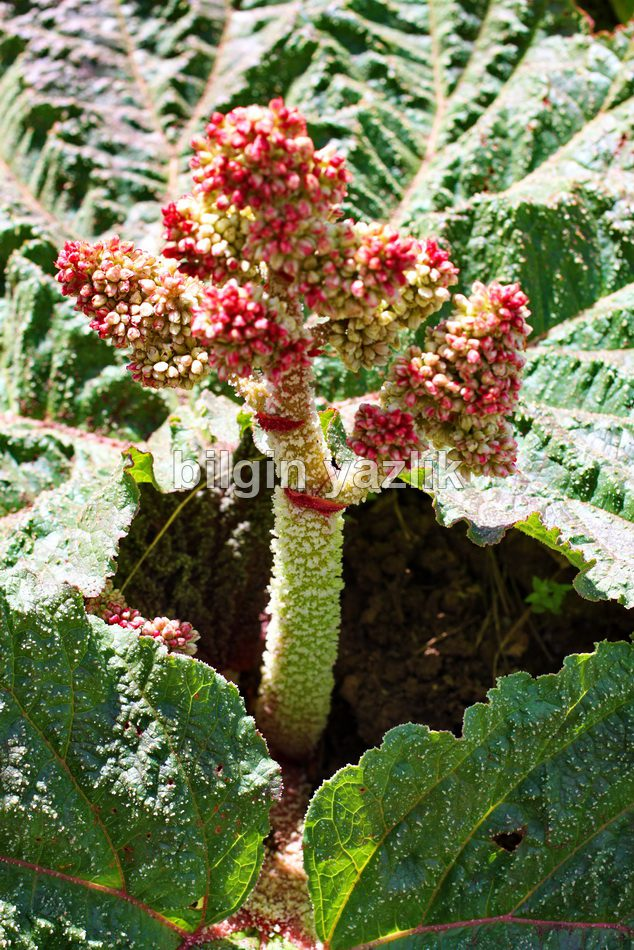
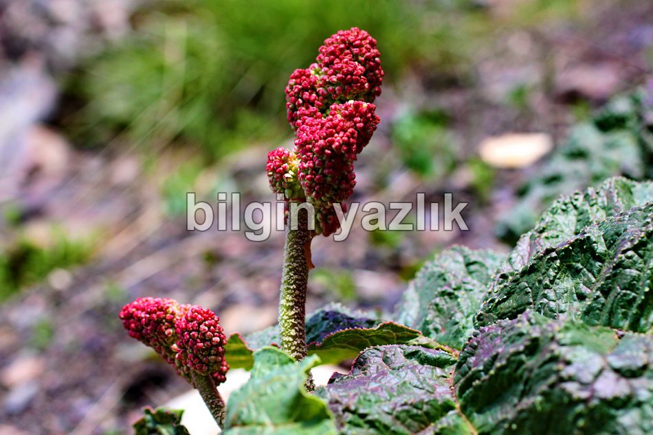
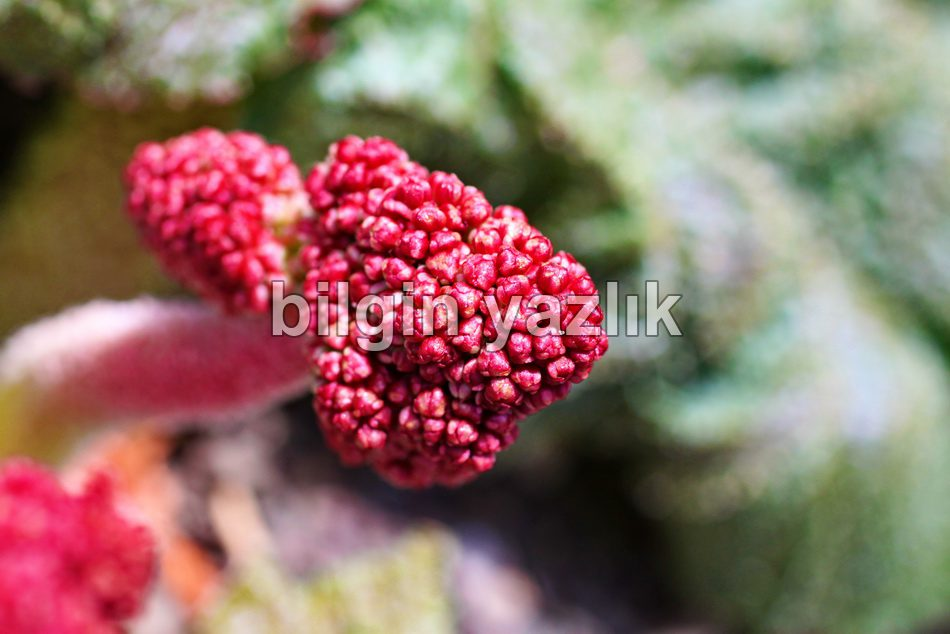

Uçkun
Van, Bitlis ve Hakkari dağlarında yetişen, Uçkun, Fışkın, Uçgun, Işkın gibi adlarla da anılan, Avrupa ve Amerika’da adı “Rhubarb” olan bitki. Geniş yeşil yapraklar arasında 10-50 cm civarında boyda yetişmektedir. Şeker hastalığına, böbrek taşlarına ve mide rahatsızlıklarına iyi geldiği söylenmektedir. Her yıl Mayıs – Haziran aylarında dağların yamaç yüzeylerinde boy verir Uçkun. Üzerinde tohumu andıran püskülleri vardır ve sanılanın aksine tohumla değil kökle üremektedir. Uçkunun kökleri toprağın çok derinine inmektedir, yamaçta yetişmesi sayesinde erozyonu önlediği iddia edilebilir. Kökleri alınarak şehirde ıslah edilmeye çalışılmışsa da başarılamamıştır. Mayhoş bir tadı olan uçkun halk arasında sevilerek tüketilmektedir. Kabuğu soyularak yendiği için “yayla muzu” ifadesi ile muz benzetmesi yapılmaktadır. Çobanlar ve köylüler tarafından toplanarak şehirde halka deste deste satılmaktadır.
Rhubarb ile ilgili bilgi: http://en.wikipedia.org/wiki/Rhubarb



Bu yazı taliyol arşivinden taşınmıştır. · özgün kayıt